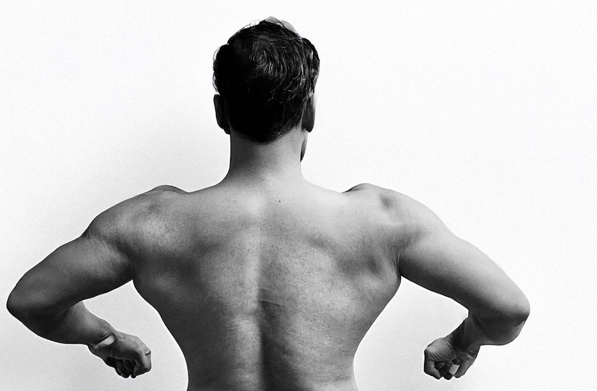

LET'S GET FIT
Fitness is more than a routine — it's a journey of growth, discipline, and self-discovery. From bodyweight workouts to resistance training, I've explored a variety of methods that challenge both mind and body. Along the way, I've found inspiration in some incredible fitness influencers who motivate me to push harder, train smarter, and never stop learning.
This blog is where I share the insights, resources, and tools that fuel my hybrid fitness lifestyle. Whether you're just starting or you're looking to step things up, you're in the right place. Let’s grow stronger — together.